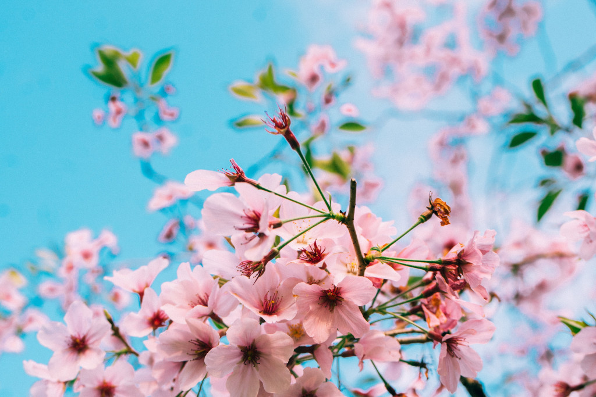

Maart 2020
Iedere dag is een dag om te leven en te leren. Ieder moment is een bijzonder moment. Iedere situatie kan gebruikt worden om een 'probleem' op te lossen en jezelf te ontwikkelen.
Problemen zitten in ons hoofd, het zijn onze eigen gedachten die ons gek maken. Ieder moment, in iedere situatie krijgen we via onze zintuigen van alles en nog wat binnen. We ruiken, proeven, zien, voelen en horen alles wat er om ons heen gebeurd. En daar vinden we wat van, we oordelen en reageren er maar op los. We reageren op kleine dingen, als je iets vindt stinken of op grote dingen, als je hoort of leest over het corona virus. Al die oordelen en reacties doen we vanuit een 'ik' besef, 'ik' vind dit niet goed, dat wel en daar hou 'ik' van.
Het leven lijkt oké, zolang datgene wat we doen bij ons past. Als we dingen doen waar we van houden zijn we blij. Maar als de situatie anders is, dan is het ineens een probleem.
De ene keer willen we graag iets niet. Als we bijvoorbeeld op school of op ons werk zijn, dan willen we er graag klaar mee zijn. Liever naar huis of op vakantie, maar niet dat werk. Een andere keer willen we graag iets wel. Moeten we ineens thuiswerken, dan willen we liever toch naar ons werk, want dat is toch wel makkelijker en gezelliger. Het zijn deze gedachten die ons 'ik' in stand houden. We doen met onze gedachten het liefst iets anders dan wat op het moment gaande is. De 'ik' gaat voor het moment.
Als we het moment zouden bekijken, dan zie je dat het moment pas een probleem is als wij er een probleem van maken in onze gedachten.
Zie dat je je leven laat leiden vanuit je eigen oordeel en reactie op je zintuigen en stop daarmee. Stop niet met datgene waar je mee bezig bent, dat is oké. Maar stop met oordelen en reageren! Neem iedere dag, ieder moment, in iedere situatie, even een stapje terug voor je weer in die valkuil van oordelen trapt. Bekijk de situatie eens, bekijk eens van een afstand de gedachten die je daarbij krijgt. Laat ze gaan, laat ze los, onthecht er van. En tada, wat gebeurt er, er is geen probleem. De problemen verdwijnen als sneeuw voor de zon.
Je bent nu ineens je probleem aan het oplossen en je werkt aan je persoonlijke ontwikkeling. Ineens is er geen ruimte meer voor angst en zorgen die ontstonden uit jouw oordeel en reactie, uit jouw 'ik'. Dan komt er ruimte voor inzicht, voor intuïtie en voor datgene wat nodig is op het moment. Dan pluk je de dag, dan leer je van de situatie.
Uiteindelijk ga je erop vertrouwen dat het goed komt, elke dag. In iedere situatie vertelt je intuïtie wat het beste voor je is. Je doet wat nodig is.
Ieder moment is een goed moment. Je kunt ieder moment besluiten te stoppen met al het denken. Maar vaak zijn de momenten te persoonlijk of te klein, en moeilijk voor je waar te nemen. Dan zit je veilig in de bubble van je leven en is het moeilijk te zien dat je denken eigenlijk een probleem is.
In deze tijd van het corona virus is dat anders. Nu krijgt iedereen te maken met problemen. Dat heeft grote impact. Daar kun je niet omheen. Het is een groter moment met grotere angst, angst voor de dood, en grotere zorgen, zorgen om inkomen. Maar ook nu is de situatie er voor jou om van te leren. En omdat het iedereen raakt is het ook voor de mensheid iets om van te leren.
Zijn dit andere problemen dan normaal? Nee, het blijven gedachten, alleen laat je je nu nog harder meesleuren door je gedachten dan voorheen. Stop nu eens met oordelen en reageren. Stop daarmee. Bekijk de situatie eens zonder te denken, zonder oordeel. Wat blijft er dan over? Er is geen probleem. Er is wel een andere dag, een ander moment, een andere situatie, die om andere dingen vraagt.
Als er nu een groot beroep op je wordt gedaan door de mensheid, doe dit dan, dit is je kans om een stap te maken in je persoonlijke ontwikkeling. Help anderen vanuit je intuïtie. Wordt je juist gevraagd niets te doen, doe dit dan ook, vanuit compassie voor anderen. Het is beiden goed. Je doet wat nodig is en je leert daar van.
Dit is een moment waarop het makkelijker is die 'ik' eens opzij te zetten en jezelf als onderdeel van het geheel te zien. We zijn allemaal afhankelijk van elkaar, ga dat inzien. Je 'ik' opzij zetten is voor elkaar zorgen. Zo help je jezelf en de mensheid een stapje vooruit in tijden dat je denkt dat alles achteruit gaat. Laten we wensen dat deze situatie de mens dichter bij zichzelf brengt en de mensheid dichter bij elkaar.
Vertrouw er ook nu op dat het goed komt. Straks is er weer een nieuwe dag. Wie weet wat die gaat brengen.
Als je niet oordeelt en reageert worden je gedachten stiller en kun je intuïtiever leven. Dit is wat je kunt oefenen met concentratie en meditatie. Door diepe concentratie kom je in meditatie en ga je voorbij je gedachten. Je laat alle gedachten los. Door loslaten van gedachten verdwijnen oude patronen en verschijnen nieuwe inzichten. Je vergroot je bewustzijn en realiseert dat je onderdeel bent van het geheel.
Dat is echte persoonlijk ontwikkeling. Je laat je niet meesleuren door gedachten en lost je problemen op. Je krijgt vertrouwen, verbetert de kwaliteit van je leven en kan je dromen realiseren.
Meditatie is belangrijk, misschien wel het allerbelangrijkste, maar vergeet niet te leren van iedere situatie, altijd is er de keus. Ga je oordelen en reageren. Of ga je doen wat nodig is. Pluk de dag, ieder dag!
Lees meer BOE blogs
Neem contact op
Ga naar www.bamboehuis.amsterdam